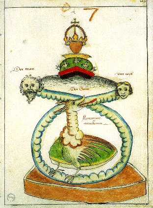
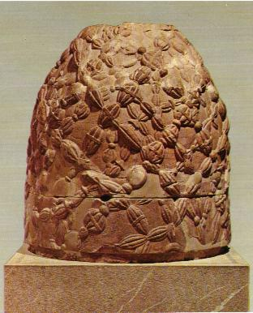
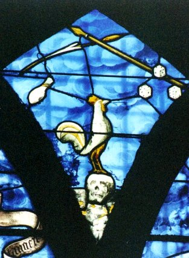
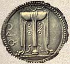
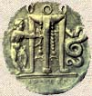
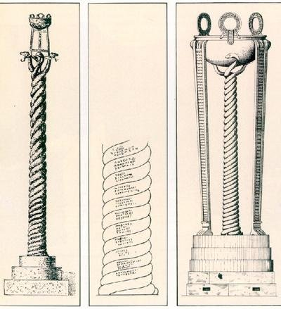

EMBLEMA XLVI.

Aquilae duae, una ab ortu, altera ab occasu conveniunt.
(Deux aigles venus l’un de l’Orient, l’autre de l’Occident, se rencontrent1.)De Delphes2 Jupiter un jour lança deux aigles
Aux plages de l’Aurore, à celles d’Occident.
Comme il voulait scruter ce lieu, centre du monde,
La fable dit qu’à Delphes ils revinrent tous deux.
Ce sont là les deux pierres : celle de l’Orient
Et celle du Couchant, qui aiment à s’unir3.Cicéron rapporte au livre De la Nature des Dieux qu’un très ancien Apollon, né de Vulcain, était le gardien d’Athènes. Et certes cette opinion est très véridique si, comme on doit le faire, on la transporte dans le domaine de l’allégorie, car Vulcain produit le soleil philosophique qui est Apollon. Mais l’opinion a prévalu qu’il est né de Jupiter4. Alors que Latone portait dans son sein les jumeaux Apollon et Diane conçus par elle de Jupiter, Junon jalouse envoya Python5, serpent horrible et d’une taille monstrueuse, pour poursuivre et tourmenter la future mère. La pauvre femme, après avoir erré longtemps, fut enfin amenée par sa barque dans l'île d’Ortygie chez sa sœur Astérie qui régnait là6. Et bien que cette île fût presque entièrement inondée par la mer, elle offrit une place à Latone en couches, et fut pour ce motif appelée Délos (visible) alors qu’elle était auparavant adhlos (obscure)7. Latone y mit donc au monde ses enfants. Diane sortit la première de son sein et s’offrit comme sage-femme à sa mère en travail pendant qu’elle enfantait son frère Apollon. Et c’est pour cette raison que les femmes enceintes invoquaient sa puissance divine tandis qu’elles accouchaient et qu’elles l’appelèrent Lucine ou Ilithyia8, parce qu’elle montrait la lumière aux nouveau-nés, après leur avoir ouvert les yeux. Apollon naquit donc et, devenu adulte, il mit à mort au moyen de ses flèches Python, qui avait tourmenté sa mère9 ; il tua les Cyclopes parce qu’ils avaient fabriqué pour Jupiter un foudre destiné à causer la mort de son fils Esculape10 : celui-ci, foudroyé par Jupiter, fut précipité par lui dans les Enfers, pour avoir rendu la vie à Hippolyte11 mis en pièces par ses chevaux.
Nous avons démontré en de nombreux endroits le caractère purement chymique de ces récits. En effet, Latone, Cynthie12, Apollon et Python sont les sujets requis par l’art, qui se comportent de cette manière les uns à l’égard des autres, ainsi qu’on l’a dit. Comme ces choses avaient été divulguées par les écrits des anciens poètes, Orphée13, Linos14, Musée15, Homère16, elles fournirent aux ignorants l’occasion de rendre un culte à Apollon et de le vénérer. C’est ainsi qu’Apollon fut honoré en de nombreux endroits d’Europe et d’Asie et que d’innombrables temples furent érigés en son honneur. Delphes en particulier posséda un temple vénérable, objet d’un antique culte, où rois et princes avaient fait déposer des statues d’or massif et d’argent, très pesantes et très ouvragées, ainsi que d’autres dons précieux qui, pour des raisons religieuses, étaient cachés aux yeux des hommes de toutes conditions, dans des trésors. Pausanias rapporte qu’un squelette de bronze d’un art admirable fut suspendu à la voûte du temple par Hippocrate. Le fameux trépied17 fut également consacré à Apollon par Pélops lors de son mariage avec Hippodamie, fille du roi d’Elide Oenomaos ; Mulciber avait fabriqué ce trépied et en avait fait don à Pélops. Il avait été dressé au milieu du temple. La Pythie recevait, assise sur ce siège, le souffle du Démon qui s’élançait hors d’une profonde cavité18. Saisie par cette inspiration, elle prophétisait et rendait des réponses à ceux qui voulaient savoir le déroulement des choses futures.
Delphes était située en Béotie, aux racines du Parnasse. Près du temple se trouvait une fontaine prophétique, Cassiotis. Si l’on approchait d’elle des torches ardentes, elles s’éteignaient19 ; si on les en éloignait, elles s’allumaient tout à coup et concevaient des flammes. L’eau de cette fontaine procurait, quand on l’avait bue, le pouvoir de prédire l’avenir. Mais la vie de ceux qui la buvaient était abrégée. Comme pour ces raisons on accourait vers l’oracle de Delphes de toutes les parties de l’Europe et de l’Asie, les poètes feignirent que ce lieu fût au centre de la terre et ils le prouvèrent par l’exemple de Jupiter qui en avait fait l’expérience en y lâchant deux aigles20. Bien que cette fable ne s’appuie pas sur la foi de l’histoire, il n’est pourtant pas étranger à la vérité de l’attribuer aux réalités chymiques, en particulier puisque Apollon tout entier est, comme on l’a dit, d’origine chymique, bien qu’un démon ait ensuite, sous ce nom, confirmé la superstition et rendu des oracles. Les deux aigles sont les deux pierres dont l’une vient de l’orient et l’autre de l’occident, ce que les philosophes ont démontré de multiples façons21. Jupiter les lâcha comme étant les porteurs de ses armes. L’aigle paraît être l’ami d’Apollon ou du soleil, puisqu’il soumet ses petits à l’épreuve du soleil et les fait périr comme étant dégénérés s’ils ne peuvent soutenir sa vue. On dit que ses plumes mêlées à d’autres choses ne pourrissent pas, qu’elles dévorent les plumes des autres oiseaux et admettent facilement la dorure22. Il ne meurt ni de vieillesse, ni de maladie, mais de faim. En effet, la pointe recourbée de la partie supérieure de son bec l’empêche, en croissant, de prendre de la nourriture23. Après s’en être défait, il se plonge trois fois dans une fontaine et de cette manière revient à la jeunesse. D’où le Psalmiste :« Ta jeunesse sera renouvelée comme celle de l’aigle ».
Seul parmi les oiseaux il n’est jamais atteint par la foudre. Il combat avec le dragon qui, pour cette raison, pourchasse ses œufs. Tous ces présents de la nature donnèrent motif aux philosophes de célébrer l’aigle dans leur œuvre et de lui assimiler la pierre. Comme il existe de cela dans leurs livres d’innombrables exemples évidents, nous n’en ajouterons pas ici.
Notes1. Ce chapitre est consacré à des allégories sur la nature des matières premières ou plutôt des matières préparées qui constituent le Rebis. Il faut différencier ici les colombes des aigles. Les deux colombes de Diane forment les Soufres. Il n'est pas évident qu'il en soit de même des deux aigles. Ce qui, toutefois, pourrait le faire croire, c'est que l'un vienne des colonnes d'Hercule, tandis que l'autre vient des colonnes de Dionysos. Tout ce qui a trait à l'aigle ayant à faire avec un point fixe, c'est-à-dire avec le Soufre, il faut essayer d'aller plus loin avec les définitions de l'Orient et de l'Occident. En effet, les alchimistes nous disent tous que l'oeuvre commence à l'Orient pour finir à l'Occident mais cela n'est pas aussi évident qu'il y paraît, si l'on tient compte de la marche des planètes - apparemment rétrograde - animées par le Second Mobile [le Primum Mobile étant le mouvement diurne, résultant bien sûr de la rotation de la Terre sur elle-même].

FIGURE I
(Mercurius, alchimistisches Manuscript, 1550, Ms. L IV 1, UB Basel)La figure I montre les deux extrémités, non pas du vaisseau de nature, mais des deux Mercure : à gauche, le Mercurius senex, à droite le Mercure animé. Le serpent Ouroboros encadre la scène et la couronne de perfection est suspendue au-dessus du Mercure, fluide comme de l'eau. Au-dessus de la couronne, une terre mitrée, également couronnée. En bas, les pates du faisan [ou de l'oie, ou les griffes du vautour, tous oiseaux consacrés, comme dédiés à Héra ou à Junon, au Mercure].
a)- l'Orient : c'est le côté de la lumière, pris d'une façon générale [ortus]. C'est aussi l'origine des choses [anatolh] ou la source d'un fleuve, ou encore un rameau ou une branche d'arbre ;
b)- l'Occident : occasus, en grec : espera ; proV. C'est la chute des astres, pouvant aussi bien annoncer un coucher qu'une dissolution, c'est-à-dire la ruine, la décadence ou la mort. Mais l'Occient [Espera] peut être aussi Hespéra, l'une des Hespérides ou bien l'Italie [Esperia], la région du couchant de la Grèce. Les Hespérides [EsperiV] « au chant sonore » sont les Déesses qui prennent soin, à l'extrême occident, du beau jardin aux pommes d'or [melon] ; elles sont filles de la Nuit ou d'Atlas et d'Hespéris. On trouve aussi les îles Cassitérides [EsperideV] où se trouvaient les plus fameuses mines d'étain. Vénus, au couchant, se nomme Hesperus. Il est remarquable d'observer la coïncidence entre le fait de trouver le Jardin des Hespérides, là où murissent les futurs Soufres de la Pierre et le fait d'une relation à l'étain dont Gabriel-Auguste Daubrée a noté la toute première importance des chlorures comme agent de minéralisation, associé à l'eau surchauffée.
Voyez les définitions que donne Pernety, dans les articles de son Dictionnaire,aux points cardinaux :Orient. Mercure des Philosophes. Quelques Chymistes ont donné le nom Orient à l'urine. Mais souvent les Adeptes entendent par ce terme la couleur blanche qui succède à la noire, par allusion à l'orient, où se levé le Soleil quand il sort des ténèbres de la nuit.Notez une parenté entre cet emblème et le premier de la série, où l'on voit Zeus comme AIR, alors qu'ici il désigne les éléments qui naviguent dans l'AIR et qui, seuls, peuvent regarder fixement le soleil, considéré comme Soufre.
Occident. Nom que quelques Chimistes ont donné à la matière de l'œuvre en putréfaction. C'est la dissolution du Soleil Hermétique; on l'appelle Occident, parce que ce Soleil perd alors son éclat, comme le Soleil céleste nous prive de sa lumière lorsqu'il se couche. Quand la couleur blanche se manifeste après la noirceur de la matière putréfiée, on l'a appelée Orient, parce qu'il semble que le Soleil Hermétique sort alors des ténèbres de la nuit.
Occident. Nom que quelques Chimistes ont donné à la matière de l'œuvre en putréfaction. C'est la dissolution du Soleil Hermétique; on l'appelle Occident, parce que ce Soleil perd alors son éclat, comme le Soleil céleste nous prive de sa lumière lorsqu'il se couche. Quand la couleur blanche se manifeste après la noirceur de la matière putréfiée, on l'a appelée Orient, parce qu'il semble que le Soleil Hermétique sort alors des ténèbres de la nuit.
2. Delphes : une pierre conique sacrée y était conservée et associée à Apollon. Voyez le deuxième décan des Poissons [Atalanta, XL] où nous analysons le rapport entre le dauphin [delphiV] et le nom ancien de Delphes [Puqw : Pytho]. Outre l'allusion évidente au serpent Python [que l'on voit d'ailleurs sur la figure I et dont nous avons analysé les occurrences de symbolisme dans l'Atalanta, XLIV], Delphes est homonyme de puqw [putréfaction]. On appelait aussi Apollon PuqoktonoV parce qu'il avait tué le serpent Python [ce qui signifie que Latone a accouché sur Délos]. Selon les légendes, Delphes était le centre du monde : un jour Zeus aurait lâché deux aigles [c'est le sujet du présent emblème], l'un du Levant, l'autre du Couchant, qui, au point où ils se rencontrèrent, aurait laissé tomber la Pierre sacrée, marquant ainsi le centre, le « nombril du monde » [Omphalos, cf. blasons alchimiques]. L’omphalos serait la pierre avalée par Cronos en lieu et place de Zeus. Elle symbolise ainsi la naissance de Zeus et sa puissance. Cronos, ayant appris qu’un jour un de ses fils le détrônerait, exigeait de sa femme qu’elle lui livre chaque nouveau né, qu’il dévorait aussitôt. Mais elle réussit à lui soustraire Zeus, son sixième enfant. Quand Zeus vint au monde, elle offrit une grande pierre enveloppée de linge à son époux qui l’avala promptement, la prenant apparemment pour le bébé. Plus tard, devenu adulte, Zeus, aidé de sa grand-mère la Terre, força son père à dégorger ladite pierre et elle fut déposée à Delphes.

FIGURE II
(l'omphalos de Delphes)Cette pierre recouvrerait la tombe du serpent Python, vaincu par Apollon. L'omphalos présente de curieux moulages entrelacés qui ne sont pas sans rappeler le X de Fulcanelli. Placé à la croisée des chemins, au centre du Monde, il n'est pas sans rapport, aussi, avec Hécate [elle-même ayant des traits croisés avec Séléné, Artémis et Déméter, cf. Atalanta, XLII]. Recouvert de l'agrigon [filet], il supportait jadis, les deux aigles d'or qui, lâchés par Zeus, se rencontrèrent à Delphes. Voici un extrait relatif à l'omphalos gordien :
RECHERCHES SUR LA GÉOGRAPHIE ANCIENNE DE L'ASIE MINEURE3. Delphes est considérée comme le centre du Monde par référence au serpent Python [le Mercure], dans laquelle nos deux roches doivent être dissoutes. Par extension, DeljoV désigne le fils de Poséidon, c'est-à-dire Protée [mais Poséidon a eu une telle progéniture qu'on prendra garde de prendre à la lettre notre assertion ; le cyclope Polyphème est aussi fils du dieu...]. Curieusement, Pernety n'a pas inserré d'article « Delphes» dans son dictionnaire.
VI - L'OMPHALOS GORDIENDans le récit que fait Quinte-Curce du séjour d'Alexandre à Gordium, trois points sont à considérer :
1)- L'historien note que la ville, ancienne et fameuse capitale du roi Midas (quondam nobilem Midae regiam) se trouve également distante de la mer Pontique et de celle de Cilicie (pari intervallo Pontico et Cilicio mari distantem);
2)- que l'empire de l'Asie, d'après les croyances des habitants, était promis à celui qui dénouerait le nœud avec lequel on avait assujetti le joug du vieux char royal conservé en ex-voto dans le temple de Jupiter (Asiae politurum, qui inexplicabile vinculum solvisset) ;
3)- que cette promesse résultait de la prédiction d'un oracle (editam esse oraculo sortem).
De récentes recherches ont attiré l'attention sur l'idée, répandue de très bonne heure chez un grand nombre de peuples, qu'il existait un centre ou nombril de la terre (orbis terrarum umbilicus), ou de certaines régions de la terre. Aux exemples cités par Roscher et dont les plus caractéristiques sont ceux de l'ombilic du temple d'Apollon Pythien à Delphes et du sanctuaire d'Apollon Didyméen & Milet, M. Jallian, puis M. Loth, ont montré qu'il fallait ajouter la Gaule et les Iles Britanniques. Je me demande si les Phrygiens ne doivent pas être compris dans cette liste, à côté des Hindous, des Babyloniens, des Israélites, des Phéniciens, des Arabes, des Égyptiens, des Perses, des Grecs, des Italiotes et des Celtes. Ce qui tend à le prouver, c'est la place éminente faite à leur capitale dans les croyances indigènes, telles que les rapporte Quinte-Curce d'après les historiens d'Alexandre. Nous trouvons réunies, à propos de Gordium, les trois idées sur lesquelles se fonde, dans son expression la plus complète, le système de la détermination d'un nombril de la terre : l'idée géographique de centre, l'idée religieuse de prédiction divine, l'idée politique d'empire. On ne nous dit pas clairement d'où était originaire l'oracle accordant la domination de l'Asie à celui qui dénouerait le nœud gordien. Mais tout donne à penser qu'il en allait à Gordium comme à Delphes et à Milet, où c'était l'oracle local qui faisait du sanctuaire de la nation le centre de l'Oikouméné.
Dans les temples de l'Ionie et de la Grèce, la figuration de l'ombilic consistait en une masse de forme conique ou pyramidale. A Delphes, « deux aigles. que Zeus avait lancés des extrémités du monde, fixent, en se rencontrant, le centre de la terre, et une pierre sacrée marque l'endroit précis de leur réunion » [G. Karo, Dict. des Antiquités, 8, V. Omphalos. Cf. Courby, l'omphalos delphique dans les C.R. Acad. Inscr., 1915, p. 169]. A Gordium. nous avons affaire, non plus à une borne, mais à un char [Ce char est l'équivalent du char sacré des Perse, oralement consacré au dieu du ciel, et qui suivait les Achéménides dans leurs expéditions]. Toutefois, l'aigle, messager du roi des dieux, joue son rôle dans la légende. Pais, certaines particularités du char de Priam se prêtent à de curieux rapprochements. Le joug du véhicule homérique porte une bossette en forme de nombril, omjaleen; c'est cet ombilic qui reçoit la courroie d'attache : « edhsan ep omjalen ». Il est évident que le char de Gordium, auquel la tradition locale attribuait une antiquité légendaire, était d'un type primitif et ressemblait plus ou moins au char de ces Troyens dont les Phrygiens étaient les alliés. Il avait donc sans doute, lui aussi, son omphalos : ce fut à cet omphalos gordien qu'Alexandre s'attaqua et dont il trancha le nœud, accomplissant ainsi l'oracle, ou l'éludant.GEORGES RADET.
[Annales annales de la Faculté des lettres de Bordeaux et des Universités du Midi, 1917. 4. Sér. 4. Année 39 - T. 19]
4. voyez Atalanta, XLIV ;
5. sur Python, cf Atalanta, XLIV, note 1 et tableau I.
6. sur Latone et Astéria, cf. Atalanta, XLIV, note 21. Sur Ortygie, voyez Atalanta X, XI et surtout XL. On notera le rapport phonétique entre Ortygie [Délos] et Ogygié [Cos, cf Atalanta, XLV]. C'est qu'il s'agit d'abris [de ugihV, salutaire, propre à guérir si l'on prend les quatre dernières lettres « ygie » du nom de chaque île] où, d'un côté Latone accouche, et de l'autre, Ulysse parvient à s'échouer sur un radeau de fortune [ses compagnons avaient mangé les boeufs consacrés à Hélios sur l'île de Thrinacie. Zeus foudroya alors tous les impies et détruisit les navires d'Ulysse dans une tempête. Seul Ulysse fut épargné et c'est là où il fut retenu prisonnier pendant sept ou huit ans par Calypso]. Notez que dans un cas, Latone accouche d'Apollon et que dans l'autre cas, Ulysse reste sept ans à Ogygié [le chiffre 7 est consacré à Apollon].
7. Ce jeu de mots semble de Michel Maier. adhloV signifie « qui ne se montre pas, invisible ». Il ne paraît pas que Fulcanelli ou E. Canseliet aient repris ce petit trait de cabale. Sur Délos et Latone, Fulcanelli a consacré quelques pages au tome II des Demeures Philosophales, quand il examine le caisson sur l'arche de Noé du château de Dampierre. Quoi qu'il en soit, il faut rapprocher ce que nous disons d'une note de bas de page :« Les linguistes veulent, d'ailleurs, que Lhtw se rapproche de Laqein, infinitif aoriste second de Lanqanein signifiant se tenir caché, échapper à tous les yeux, être caché ou méconnu, en accord pour nous, avec la phase ténébreuse dont il sera bientôt question. » [DM, II, p. 139]
En ce sens, les mots adhloV et lanqanw sont des homonymes hermétiques.

FIGURE III
(Palais Jacques-Coeur, Bourges - intérieur, détail - cliché Alain Mauranne)Quelque lanterne, telle que celle que nous apercevons à la figure II, aurait tôt fait de nous éclairer sur la portée exotérique des deux aigles de Zeus.
8. sur Ilithye, voyez l'Atalanta, XXXVIII. Nous ajouterons qu'on l'appelle Junon-Lucine [il s'agit de Diane]. C'est elle qui permet la manifestation de la lumière, exprimée sur la figure II.
9. cf. note 2.
10. sur Esculape, cf. Atalanta, XLIV, note 30. L'épisode où Apollon tue les Cyclopes trouve sa contre partie dans l'aveuglement de Polyphème par Ulysse, cf. note 6.
11. sur Hippolyte, cf. Atalanta, XLIV, note 30.
12. sur Cynthie, cf Atalanta X et XXV. Il s'agit de Diane, honorée sur le mont Cynthus, montagne de l'île de Délos. Apollon est Cynthius.
13. sur Orphée et l'orphisme, on pourra lire le texte très intéressant tiré du site : http://perso.club-internet.fr/annickl/orphpyth.html.Orphée était réputé comme poète et musicien, mais aussi comme philosophe ; plus exactement ces différents aspects étaient indissociables : son enseignement était religieux ; il apportait la paix et la sérénitéa, en particulier au moyen de ses chants, transmission de paroles divines.Notes : a. l'eau permanente, stabilisée, deuxième partie de la Grande coction. b. la métempsychose rentre sans problème dans notre système. A partir du moment où l'on considère que l'Âme n'est qu'une chaux métallique, on peut lui faire habiter plusieurs « résines » ou corps différents [surtout par leur squelette plus ou moins riche en silicate ou en aluminate]. c. ce problème de la faute originelle trouve sa base dans le caractère même de l'âme qui est un « venin » [ioV, venin, chaux métallique, rouille, vert-de-gris]. L'Artiste doit s'efforcer de capter un rayon igné solaire et tâcher de le capturer dans le Corps adéquat. d. la mémoire perpétuelle est le pur esprit, épithète de notre Mercure. e. Nous avons montré tout le côté alchimique de ces allégories : le Titan est de la chaux, à partir de laquelle est façonnée une âme, incorporée au moment opportun [et alors cette réincrudation est appelée par les alchimistes « homme »]. Zagreus [ZagreuV] est le « premier Dionysos » crétois et peut-être, égéen. Il est fils de Zeus et Perséphone, dévoré sauf le coeur, par les Titans. Ce Dionysos déchiré et ressuscité est une figure capitale de l'orphisme et, caractérise en alchimie, le phénomène de la réincrudation. Le coeur de Dionysos est l'Âme ou chaux qui reste vivant dans le feu à l'image d'un SEL fixe, incombustible. On doit voir dans la figure de Zagreus nos matières portées au creuset et souffrant la passion [zagriou : torture].
L'orphisme est un système de pensée peu connu, parce qu'il ne subsiste aucun document datant de l'époque à laquelle ce mouvement connut vraisemblablement son apogée, c'est-à-dire au VIme siècle avant J.C. On en connaît toutefois les croyances et pratiques essentielles :
- croyance à l'immortalité de l'âme qui habite plusieurs corps successivement (métempsychose)b.
- obligation pour l'âme de séjourner dans un corps à cause d'une faute originelle (non précisée jusqu'à une date très postérieure). Le corps constitue donc une prison nécessaire pour l'âme qui n'a pas le droit de chercher à s'en échapper (interdiction du suicide)c.
- jugement de l'âme à chaque mort : lorsque l'âme est enfin pure (au bout d'une moyenne de dix mille ans d'errances successives dans des enveloppes corporelles !), elle accède à l'immortalité. Tant qu'elle ne l'est pas, elle est obligée de boire l'eau du fleuve Léthé pour oublier presque tout ce qu'elle a vécu dans la vie antérieure (cf. l'idée de réminiscence, véritable définition de la connaissance selon Platon). Seule l'âme enfin pure peut boire l'eau du fleuve Mnémosyne (la mémoire)d.
- nécessité d'une vie d'ascèse pour accéder à la purification. Un aspect concret à ce sujet : les adeptes de l'orphisme sont tous végétariens, au nom de la parenté entre tous les êtres vivants et l'impiété qui se manifeste dans le meurtre sans raison d'un être vivant quel qu'il soit.
La faute originelle reste assez mystérieuse. Dans des textes postérieurs (datant de l'ère chrétienne), il nous est conté que les Titans auraient tué et dévoré Dionysos (ou Zagreus) enfant ; pour les punir, Zeus aurait foudroyé les Titans des cendres desquels seraient nés les hommes, héritiers de ce crimee.
14. sur Linos : les mythographes pensent que Psamathé, fille du roi Crotopos, aurait eu d'Apollon un fils, Linos. Craignant le courroux de son père, elle aurait exposé l'enfant et des bergers l'auraient recueilli, mais peu après, il fut dévoré par des chiens. D'autres légendes circulent mais sont d'accord pour dire que Linos a décidément mal fini. Quoi qu'il en soit, on dit d'habitude que Linos [LinoV] est un ancien aède de Thèbes, fils d'Apollon et de Kalliopé, maître d'Orphée. Calliope cache un trait de cabale qui semble être passé inaperçu jusqu'à présent : Kallioph peut être décomposé en kalloV [beauté] et WpiV [Opis, épithète d'Artémis], soit « Kalli-WpiV » [littéralement, la belle Artémis]. Il y a plus : LinoV se rapproche de linon qui désigne « un engin de pêche ou de chasse », c'est-à-dire un filet de pêcheur, ce qui désigne expressément le moyen par lequel notre Artiste, dans le signe des Poissons, parvient à prendre au piège les Soufres [poissons argentés et gras de Jean d'Espagnet, cf. Oeuvre Secret d'Hermès], c'est-à-dire de rendre manifeste ce qui, jusqu'alors, était plongé dans les ténèbres. L'allégorie va plus loin, si l'on tient compte que lineuV désigne un petit poisson, surtout un mulet, c'est-à-dire un rouget [trigla], poisson qui est rattaché, comme le chien, à Hécate [cf. Atalanta, XLII]. On comprend dès lors, qu'à l'Aurore de l'oeuvre qui se signale par l'empâtement de l'eau mercurielle dont la coagulation survient dans le signe des Poissons, on dise que « le coq aura chanté trois fois », comme le signalent Fulcanelli et E. Canseliet. Qu'on mette ces deux passages en parallèle :« Nous dirons seulement que le vocable grec khrukeion, caducée, rappelle par son étymologie le coq, khrux, consacré à Mercure comme annonciateur de la lumière. » [Demeures Philosophales, II, p. 49-50 - Fulcanelli]

FIGURE IV
(vitrail de la Collégiale de Beaune, détail - cliché Alain Mauranne)« l'alchimiste met en pratiquela terrible révélation de l'apôtre qui renia trois fois son Maître avant que le coq eût chanté, selon le comportement même du mercure, issu de la Pierre, et ne chantant le signe qu'à la troisième reprise [...] » [Le Feu Purificateur et son Messager Apocalyptique, in Alchimie, Pauvert, 1978 - Canseliet]
C'est ce symbolisme qu'exprime la figure III qui donne à voir la dissolution [le crâne] vaincue par la force du coq et la puissance du Soufre. Curieusement, l'armature du vitrail semble abonder en notre sens, puisqu'elle affecte à très peu près la forme d'un triangle à base inférieure, coupée d'une ligne horizontale à hauteur du coq. Il ne semble pas que Fulcanelli ait signalé une curieuse association touchant au caducée [khrukeion], que l'on peut décomposer en Khr [déesse de la Mort], ukh [renvoyant par ukhV au poisson eruqrinoV, autre nom du rouger, dédié à Hécate], et enfin ion [violette]. Il y a là un remarquable trait de cabale.
15. Musée est fils d'Orphée ou d'Eumolpos et de la déesse Séléné. Il appartient à la génération de spoètes mythiques de Thrace, qui jouèrent un rôle important dans la fondation des Mystères et la création de la secte orphique. On attribuait à Musée divers ouvrages sur les dieux, l'initiation mystique et l'invention de nouvelles techniques de purification. On disait qu'Héraklès s'était adressé à lui pour se faire admettre, à Eleusis, au nombre des Initiés aux Mystères. La statue d'Harpocrate est là, un doigt devant la bouche, nous conseillant de fermer nos yeux et de boucher nos oreilles [musiV], c'est-à-dire, par cabale, d'employer du vitriol vert ou bleu [musin, de misy, vitriol, - Diosc., Math. méd., t. V, 116 - Pline, Hist. Nat., t. XXXIV, 31 - Lexicon Alch. Rulandi, p. 336 - cf. chimie et alchimie]. Il faut rapprocher le sory, plus gras, à odeur vireuse, de couleur rouge, tournant au noir. Les Arabes désignaient sous ce même nom de sory le vitriol rouge [voisin du colcothar ; ce n'était donc pas un sulfate]. Enfin, les Grecs modernes ont assimilé parfois le sory à la céruse brûlée [minium, qu'il faut distinguer du sel mercurique homonyme]. Il faudrait en rapprocher le calcanthon [sulfate de cuivre mêlé de fer que les alchimistes ont voilé sous le nom de KalcantoV « descendant de Calchas », devin fameux aux pensées profondes].
16. Homère : tant L'iliade que l'Odyssée ont été employées pour traduire en termes d'allégories et de paraboles les différentes phases du magistère. Pernety est même allé jusqu'à prétendre que toutes les fables et légendes des Anciens ne pouvaient se comprendre si l'on ne les intégrait pas dans le cadre des opérations de l'Art Sacré. Nous n'irons pas jusque-là. Notre sentiment est que l'on peut [en signalant qu'il s'agit de traits d'esprit, à prendre avec un grain de sel] employer telle ou telle légende pour expliquer ou faire comprendre un point de science. Mais de grâce, n'allons pas y trouver des noms vulgaires de substances chimiques...
17. sites consultés :
http://membres.tripod.fr/athenet/archi/delphes.htm
perso.wanadoo.fr/didier.laroche/crotoniates.html
http://site.voila.fr/Delphes3/page6.htmlIl s'agit du trépied des des Crotoniates. Il s'agit d'une grosse base quadrangulaire, située en face de l'autel d'Apollon, et composée d'un socle carré surmonté de trois assises circulaires. L'assise supérieure, en marbre, est décorée d'une frise d'ovolos. Elle porte des vestiges d'une dédicace des Crotoniates, habitants de Crotone, ville d'Italie du Sud (anciennement « Grande Grèce »).


Les traces visibles sur le dessus du monument permettent de restituer un trépied monumental, sans doute en bronze, symbole delphique par excellence, qui apparaît souvent sur les monnaies de Crotone. L'autorité et le prestige du sanctaire de Delphes émanent de son oracle, l'un des plus anciens de la Grèce. Presque tous les auteurs anciens le mentionnent, ou se réfèrent à des évènements qui se rapportent à lui. Et pourtant, nous sommes loin de connaître avec précision la façon dont l'oracle était rendu. Les questions non résolues restent nombreuses et n'ont toujours pas reçu de réponse satisfaisante pour certaines. Les mythes delphiques prouvent que, dans l'esprit des Anciens, toutes les méthodes divinatoires étaient pratiquées à Delphes. La renommée du sanctuaire reposait néanmoins sur les oracles de la Pythie, qui était directement inspirée par Apollon et parlait en son nom. C'est-à-dire que l'oracle était donné par le dieu de la mantique lui-même, la Pythie servant seulement de médium. La Pythie était une femme de plus de cinquante ans. Il était indifférent qu'elle fut vierge, mais à partir du moment où elle assumait la haute fonction de servir le dieu, elle devait quitter son mari et ses enfants et s'installer dans une maison réservée à elle seule dans l'enclos sacré. Chaste et irréprochable, elle était tenue à respecter certains rites sacrés. Malgré son âge, elle portait une robe de jeune fille, signe de la pûreté de son existence. Nous ignorons selon quels principes elle était choisie. Ce qui est sûr, c'est qu'elle n'était pas choisie dans une famille de noblesse sacerdotale, comme les prêtres et les prêtresses d'autres sanctuaires helléniques. Aussi n'était-elle pas soumise à un enseignement ou à une formation spéciale. C'était une simple femme du pays, que rien ne distinguait jusqu'au moment où Apollon lui faisait don de l'inspiration. Il n'y eut d'abord qu'une seule Pythie; lorsque les activités du sanctuaire se multiplièrent, deux autres furent instituées. Jusqu'à l'époque classique, personne ne songea à se demander comment il se faisait que la Pythie se transforma soudain et se mit à parler par la voix de Phoebus. Le rôle qu'on a attribué à ce propos à une crevasse, aux vapeurs telluriques, aux feuilles qu'elle mastiquait et à l'eau qu'elle buvait, constitue une réponse à cette question , qu'on commenca à se poser lorsque la foi se mit à décliner et qu'on crut pouvoir interpréter le divin avec le langage froid de la raison et assumer la transcendance dans la limite des normes humaines. Pour les Grecs, une seule chose était sûre, le trépied sacré était le trône ailé du dieu, qui parfois l'emportait par-dessus les mers et les continents. Comment et pourquoi le dieu avait-il choisi ce trône bizarre, personne ne le savait et n'aurait osé le demander. Les savants modernes n'ont pas pu donner de répose satisfaisante à ce problème.
C'est donc sur ce trône que prenait place la Pythie pour se faire l'instrument du dieu. Il suffisait qu'elle prenne la place d'Apollon pour sortir de son état normal, tomber en extase et hurler d'une façon incohérente et obscure le message divin. Avant de l'installer sur le trépied, il fallait néanmoins s'assurer que le dieu voulait bien donner audience. On amenait donc une chèvre devant l'autel, les prêtres l'aspergeaient d'eau froide avant de procéder au sacrifice. Si le malheureux animal tréssaillait de tout son corps, de la tête aux pieds alors le dieu marquait son accord, sinon la Pythie n'avait pas le droit au trépied. A une époque très reculée ( avant le VIe siècle av.J.-C.), l'oracle était rendu une fois par an, le septième jour du mois de Bysios (février-mars), jour de naissance d'Apollon. Plus tard, il fut promulgué tous les mois, toujours au septième jour, sauf pendant les trois mois de l'hiver, pendant les quels le dieu quittait le sanctuaire de Delphes et partait au loin, au pays des Hyperboréens. Il cédait alors la place à Dionysos, adoré au même titre qu'Apollon et dans le même temple. Dès l'aube de ce jour sacré, la Pythie allait la première à la source Castalie pour se purifier, puis procédait à des fumigations de feuilles de laurier au foyer sacré. Pendant ce temps les prêtres accomplissaient le rite de la chèvre, précédemment décrit. Si le dieu était consentant, on procédait au sacrifice sur le grand autel situé devant le temple et donné par Chios. [extrait de : M.Andronicos, M Chatzidakis, V Karageorghis, Les merveilles des musées grecs, Athènes 1974, Paris 1975]. On a pu reconstituer le trépied dédié à Apollon et cette reconstitution a donné l'image

FIGURE V
(trépied d'Apollon)A la suite de la victoire remportée contre les Perses à Platées en -479, les Grecs qui participèrent à cette bataille offrirent à Apollon un trépied en or consacré sur la dîme du butin. Le trépied en or fut fondu par les Phocidiens lors d'un conflit au milieu du quatrième siècle avant notre ère. A l'époque où le voyageur Pausanias visita Delphes (2e s. après J.-C.), il ne restait plus que la colonne de bronze, support de l'offrande, qui représentait trois serpents aux corps enlacés. Cette colonne existe toujours, à Istanbul, ex-Constantinople, où l'empereur Constantin la fit transporter, avec beaucoup d'autres oeuvres d'art, pour orner sa nouvelle capitale. La colonne se dresse sur la place de l'Atmeydan, correspondant à l'ancien hippodrome, encadrée de deux obélisques. Les têtes ont été détruites en 1700, victimes du jeu qui consistait à les atteindre avec des projectiles divers (ci-dessus). A Delphes même ne subsiste plus qu'un fragment de la base dite « campaniforme » (profil en cloche) représentée en bas du dessin ci-contre. Le bronze, haut de six mètres, fut coulé en une seule fois, ce qui représente un tour de force technique. On peut encore distinguer, gravés au bas de la colonne, le nom des trente-et-un peuples qui participèrent à la bataille.
Ce trépied offre un intérêt hermétique évident. La colonne torse semble constituer une sorte de tige de caducée, où la fixité provient de la disposition en spirale des trois serpents, procurant à l'ensemble une solidité qui serait impensable autrement [qualité astringente évidente, propre au serpent, qui est de resserrer. Nous n'entrerons pas ici sur les détails des substanches chimiques astringentes, cf. chimie et alchimie].
18. Cette cavité pouvait représenter une faille d'où émanaient des exhalaisons sulfureuses ; ce n'est qu'une hypothèse [cf. note 17] mais elle semble fondée. En effet, un article de la revue Geology fait état que :En 480 avant notre ère, les Athéniens, en guerre contre les Perses, s’enquièrent auprès de l’oracle de Delphes de la conduite à adopter devant l’offensive ennemie, mais ne reçoivent en réponse que des promesses de malheur : « À la flamme furieuse, Arès (le dieu de la guerre) livrera bien des temples, où les images des immortels se dressent aujourd’hui couvertes de sueur, tremblantes d’effroi, et du haut des toits ruisselle un sang noir, présage du désastre fatal. » On venait de tout le pays consulter Apollon, le fils de Zeus, par l’intermédiaire de l’oracle de Delphes. L’écrivain romain Plutarque a rapporté comment la cérémonie de l’oracle se déroulait : la Pythie, celle par qui s’exprimaient les dieux, se retirait dans une pièce située sous le temple d’Apollon où, en inhalant des vapeurs, elle entrait en transe. Elle rendait ensuite l’oracle en des propos incompréhensibles, que seuls des prêtres savaient interpréter. Selon Plutarque, les gaz inhalés par la Pythie provenaient d’une fissure dans le sol ou d’une source d’eau. Cependant, l’excavation du temple à la fin du XIXe siècle ne révéla ni fissure, ni trace de source. Une équipe constituée d’un géologue, d’un géochimiste, d’un archéologue et d’un médecin, propose aujourd’hui, après analyse de la géologie du sol, que celui-ci est suffisamment perméable pour laisser passer des gaz. En outre, ils ont découvert dans les eaux qui s’écoulent à proximité du site des traces d’éthylène qu’on sait responsable d’hallucinations. La diffusion de ce gaz par les roches vers l’intérieur du temple aurait été responsable des transes de la Pythie. [...].19. Il s'agit sans doute de la source Kastalli [Castalis]. La source coule entre deux avancées rocheuses, appelées Phédriades [littéralement les roches brillantes]. L'eau était amenée au sanctuaire qui servait aux prêtres et aux pèlerins pour se purifier . C'est à cette fontaine que la Pythie prenait son bain avant d'entrer dans le temple d'Apollon. La fontaine date environ de 140 av. J.-C. A l'époque , l'eau coulait par sept trous qui étaient masqués par des bouches en bronze en forme de tête de lion. Cette fontaine était consacrée, d'ailleurs, non seulement à Apollon, mais ausi à Dionysos. Le fait que les torches s'éteignaient quand on les approchait de la source semble dénoter d'émanations de CO2.Geology, 29, 707-710 (2001).
20. cf. note 2.
21. la pierre du Levant est congénère d'une terre styptique et au goût astringent dont ont parlé Pline et Dioscoride. Les deux donnent, à la décomposition, un sel vitriolique ; elles diffèrent par leur base, l'une tenant de l'alkali fixe et l'autre du marbre de Carrare. La pierre du Couchant est plus difficile à définir. On sait qu'au couchant, Vénus brille dans le crépuscule et qu'elle se nomme alors Hesperus. Est-ce une indication sur les pommes d'or du Jardin des Hespérides ? Il s'agirait alors d'une indication sur le Soufre rouge. si nous tenons compte, par ailleurs que le mot pomme et brebis sont homonymes en grec [mhlon], il pourrait s'agir d'une indication sur la nature d'Ariès [c'est-à-dire sur la Toyson d'or]. L'oiseau étant un aigle, c'est d'un principe fixe que Michel Maier veut évoquer. On peut aussi envisager d'une façon tout à fait allégorique les épithètes d'Orient et d'Occident, sous le rapport de la nature des pierres, en supputant que la pierre de l'Orient, c'est la matière première [ou l'ensemble des matières premières] et la pierre d'Occident, la Pierre achevée, c'est-à-dire l'escarboucle des Sages. rien, dans le texte de Maier, ne permet de trancher, au vrai, le noeud gordien.
22. Maier semble parler ici du Mercure animé, dans un état proche de la réincrudation du soufre [par la relation à la dorure, c'est-à-dire à la teinture]. Si l'on devait se référer au zodiaque alchimique, on se situerait à peu près dans la zone Sagittaire-Scorpion, correspondant à la 4ème zone [cf. Atalanta, XLV]
23. Michel Maier semble s'être inspiré du Psaume CII : voici un extrait qui donnera toutes précisions :Et comme si tu demandais: Quand nous veut-il rassasier? maintenant je ne suis point rassasié; quelque part que se tournent mes désirs, je n’éprouve que dégoût pour ce que j’obtiens, quelque vif qu’en ait été le désir quel bien pourra combler mes désirs, quand je convoite ce que je n’ai point, et quand je ne puis l’obtenir sans le mépriser ? La louange de Dieu. Mais ici-bas que « le corps corruptible appesantit l’âme, et que ce séjour terrestre abat l’esprit malgré la vivacité de ses pensées »a, ce n’est point la louange de Dieu qui rassasie mon âme, qui lui donne la félicité. Cette corruption qui a d’autres besoins me donne d’autres plaisirs, qui me détournent de Dieu, Quand mon désir sera-t-il saturé de bonheur ? Quand ? me dis-tu. Ecoute: « Il renouvellera ta jeunesse comme celle de l’aigle »b. Tu veux savoir quand sera-ce que ton âme sera rassasiée de bonheur ? Quand tu recouvreras ta jeunesse. Le Prophète ajoute: « Comme celle de l’aigle »c. Il y a ici quelque mystère; et toutefois ce qu’on dit de l’aigle, je ne le passerai point sous silence, parce qu’il n’est pas inutile de comprendre ce passage. Soyons seulement persuadés que ce n’est pas sans raison que l’Esprit-Saint a dit : « Tu as jeunesse sera renouvelée comme celle de l’aigle », et qu’il nous marque là une certaine résurrection. L’aigle renouvelle en effet sa jeunesse, mais non pour devenir immortel. Le Prophète emprunte aux choses mortelles une image telle qu’il peut la trouver, non pour nous démontrer, mais pour nous désigner seulement l’immortalité. On dit que l’aigle, quand son corps est accablé de vieillesse, ne peut plus se nourrir, à cause de la grandeur de son bec, croissant avec l’âge. La partie supérieure du bec, qui vient se courber sur la partie inférieure, excède de beaucoup avec les années, en sorte que cet accroissement ne lui permet plus d’ouvrir le bec, et ne laisse aucun intervalle entre la partie inférieure et le crochet supérieur. Or, sans intervalle entre ces deux parties, le bec ne peut imiter le jeu des ciseaux, ni mettre en pièces ce qu’il veut avaler. La vieillesse donc, faisant croître et courber cette partie supérieure, l’empêche d’ouvrir le bec et de prendre sa nourriture. Le voilà sous le poids de la vieillesse, et de l’impuissance de manger, ce qui le jette dans la double langueur et des années et de la faim. Alors, par un instinct naturel, il recouvre jusqu’à un certain point sa jeunesse, dit-on, en heurtant contre la pierre cette espèce de lèvre supérieure dont l’accroissement démesuré lui ferme le bec; et en la frappant ainsi contre la pierre, il se débarrasse d’un fardeau incommode, qui fermait le passage à la nourritured; il reprend cette nourriture, et ses forces reviennent : il est dans sa vieillesse, comme le jeune aigle; ses membres ont de la vigueur, ses plumes de l’éclat, ses ailes sont libres, son vol aussi haut qu’auparavant ; il s’opère en lui une certaine résurrection. Tel est le but de la comparaisone ; c’est dans le même sens que l’on se sert quelquefois de la lune qui diminue, qui se dérobe en quelque sorte, pour reparaître ensuite et arriver à son plein; ce qui nous représente la résurrectionf : mais elle ne demeure pas dans ce plein; elle diminue ensuite, pour être toujours une image. Ainsi en est-il de l’aigle : s’il rajeunit comme nous l’avons dit, ce n’est point pour devenir immortel, tandis que nous c’est pour une vie sans fin : on emploie toutefois cette comparaison pour nous avertir de briser contre la pierre tout ce qui est pour nous un obstacle. Ne présume donc point de tes forces, puisque c’est la solidité de la pierre qui te fait secouer ta vieillesseg.Il n'entre pas dans notre programme - nous l'avons dit ailleurs - de nous livrer à une exégèse touchant aux textes bibliques. Aussi se bornera-t-on à quelques notes sur le sujet qui nous occupe. Ces notes ne doivent être prises que comme des conjectures, basées sur les « prétextes » que constituent ces pages du Psaume CII. N'allons pas faire dire à un texte ce qui ne s'y trouve pas.
a. c'est le problème fondamental de l'alchimistes : qu'il trouve un juste équilibre entre la dose de Mercure [Esprit], la dose de Sel [Corps] et celle du principe de teinture [Âme]. Sans de justes proportions, qui seront trouvées dans le signe de la Balance, avant de passer à la Vierge, la Grande Coction ne pourra aller. Ce qu'il faut comprendre ici, c'est que l'on part de susbtances amorphes, destinées à passer par une fusion ignée [Esprit] avant la réincarnation [que l'alchimie nomme réincrudation]. Le Mercure meurt de ses « propres plumes », n'ayant plus rien à disoudre [parabole du rassasiement] ; b. C'est l'allusion de Maier ; c. la jeunesse doit s'entendre comme la réincrudation ; d. de la même façon, les alchimistes ont indiqué que c'était par le « frappement du rocher » avec son glaive miélé, que l'Artiste pouvait faire progresser sa matière vers un état de perfection plus noble mais l'analogie s'arrête là, car, à partir d'une certaine époque, l'empâtement de l'eau mercurielle [comprenez l'allongement de la partie supérieure du bec de l'aigle] devient telle que le Mercure meurt « par ses propres plumes » pour reprendre cette heureuse expression de Fulcanelli ; e. Il s'agit là de la comparaison entre le Mercurius senex de la figure I qui apparaît à gauche et le Mercure transfiguré, transformé en jeune homme, une fois que la ponticité en a été retirée. Tous les ouvrages alchimiques parlent de cette évolution de la substance mercurielle. Le Donum Dei en donne une figure ; le De Lapide Philosophorum de Lambsprinck aussi ; cette véritable « transfiguration » du Mercure se déroule au signe du Sagittaire [Atalanta, XLV] ; f. ce point a été abordé et approfondi dans le chapitre précédent, à propos de l'ombre. La résurrection correspond à l'époque où la Lune commence à devenir gibbeuse et où la lumière cendrée réapparaît ; g. réflexions que les étudiants peuvent reprendre presque mot pour mot à leur compte ; il suffit de remplacer le mot « pierre » par celui de « Corps ».